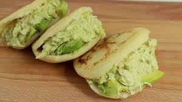

 Reina pepiada La arepa representa uno de los iconos más importantes de la gastronomía nacional, un sello indiscutible de venezolanidad a nivel internacional. Supera incluso la hallaca, las empanadas y el pabellón criollo. Este alimento de origen precolombino se consume en todo el territorio nacional y está en constante evolución. Su gusto casi neutro le permite gran diversidad de sabores, transformándose en una base muy versátil para infinidad de recetas. Sin embargo, hay una arepa que es monarca entre las arepas, la más apetecida y degustada, la primera que ofreces a un turista para impresionarlo: la reina pepiada. Esta arepa hace gala de un exquisito sabor compuesto por pollo o gallina desmechada, aguacate y mayonesa. Definitivamente, ¡una delicia tropical! Si quieres prepararte una arepa inolvidable, en nuestra receta de reina pepiada encontrarás todos los pasos a seguir. ¡Luego nos cuentas tu experiencia gustativa! Ingredientes Para la masa: 500 ml harina de maíz blanca 500 ml agua 1/2 cucharadita de sal 30 ml aceite Para el relleno: 1 cebolla blanca 2 dientes de ajo 1 pechuga de pollo 2 cucharadas de mayonesa 1 aguacate Aceite de girasol Sal Pimienta Preparación: Para hacer la masa, disponer la harina de maíz precocida en un recipiente y mezclar con la sal. Formar un hueco y echar el agua, mezclando poco a poco. Trabajar la masa con las manos hasta que quede bien hidratada y esté lisa y homogénea. Debe quedar húmeda pero no pegajosa. Corregir de harina o agua si fuera necesario. Tapar y dejar reposar 10 minutos. Preparar una sartén o plancha con un poco de aceite. Dividir la masa en 6-8 porciones, dependiendo del tamaño deseado, procurando que sean más o menos iguales. Formar bolas uniformes con las manos -podemos engrasarlas con aceite ligeramente para que sea más fácil- y aplanar con suavidad. Deben quedar como tortitas, con un dedo de grosor, de unos 1,5 cm. Tampoco tienen que ser perfectas. Calentar la sartén y cocinar las arepas durante unos 8-10 minutos a fuego medio por cada lado, dejando que se doren bien. La única dificultad es que no queden crudas por dentro; podemos terminar de cocinarlas en el horno a 180ºC unos 10 minutos. Para elaborar el relleno, picar o deshilachar el pollo, al gusto. Combinar con la carne del aguacate machacada, el diente de ajo prensado, la cebolla picada y un poco de perejil o cilantro picado. Salpimentar y aderezar con zumo de lima o limón. Añadir mayonesa y mezclar hasta tener la consistencia deseada. Para servir, abrir cada arepa por la mitad -sin separar las dos mitades- usando un buen cuchillo de sierra. Rellenar con la mezcla de ensalada de pollo procurando no romperlas.